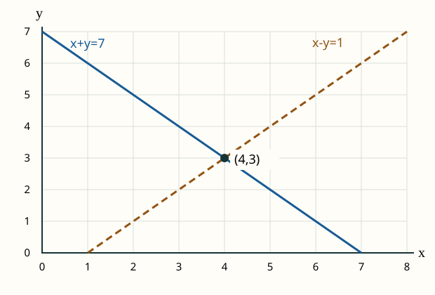

ایہہ حصہ ایس پنجابی ایڈیشن لئی نواں لکھیا گیا اے۔ ایہہ ہیفرن دی کتاب دیاں مثالاں یا مشقاں دا ترجمہ نہیں۔ ماخذ دے باب اگوں وکھرے ترجمہ کیتے جان گے۔
جے تسیں سکول دی الجبرا توں اگے ودھ رہے او، پہلاں ایہہ چار گلاں آزما لو: مساوات دے دوہاں پاسیاں اُتے اکو عمل کرنا، اک توں ودھ مساوات نوں اکٹھیاں پرکھنا، ویکٹر دے خانے ترتیب نال پڑھنا، تے میٹرکس دیاں قطاراں تے کالم پہچاننا۔ ایس حصے دیاں حسابی مثالاں تے مشقاں وچ سارے عدد حقیقی عدد نیں؛ اصطلاحی جدول وچ مرکب عدد دا مطلب وی وکھرا دسیا اے۔
| پنجابی | مطلب | اردو مدد | English help |
|---|---|---|---|
| خطی مساوات | ایسی مساوات جہدے بدل سکّن والے ہر حرف دی قوت اک ہووے؛ حرف آپس وچ ضرب نہ ہون۔ عام روپ a₁x₁ + ⋯ + aₙxₙ = b اے، جتھے a₁,…,aₙ,b مقرر عدد نیں۔ | خطی مساوات | linear equation |
| حل | حرفاں دیاں اوہ قدراں جہڑیاں مساوات نوں درست بنا دیندیاں نیں۔ نظام دا حل اوہو قدراں نیں جہڑیاں اوہدیاں ساریاں مساواتاں اکٹھیاں درست کرن۔ | حل | solution |
| ویکٹر | ایس مُڈھلی مدد وچ ترتیب نال لکھے عدداں دی فہرست۔ دو ویکٹر اوہدوں برابر نیں جدوں اوہناں دے خانیاں دی گنتی اکو ہووے تے اکو تھاں والے سارے خانے برابر ہون۔ اگے کتاب ویکٹر دا ہور عام خیال دیندی اے۔ | سمتیہ / ویکٹر | vector |
| سکیلر | ویکٹر نال ضرب کیتا جان والا عدد؛ ایتھے حقیقی عدد۔ | عددی عامل | scalar |
| میٹرکس | قطاراں تے کالماں وچ لکھے عدداں دا مستطیلی بندوبست۔ ترتیب بدلّن نال عام طور اُتے میٹرکس وی بدل جاندا اے۔ | قالب / میٹرکس | matrix |
| خطی امتزاج | ویکٹراں نوں سکیلراں نال ضرب دے کے جمع کرنا، جیویں 2u + 3v۔ | خطی امتزاج | linear combination |
| پھیلاؤ | دتے ویکٹراں دے سارے ممکنہ متناہی خطی امتزاجاں دا سیٹ؛ یعنی ہر امتزاج وچ گنتی دے ویکٹر لئی دے نیں۔ صرف اک امتزاج پھیلاؤ نہیں۔ | تمام متناہی خطی امتزاجوں کا مجموعہ | span |
| بنیاد | ایس کتاب وچ ویکٹراں دی ایسی ترتیب وار فہرست جہڑے خطی طور اُتے آزاد ہون تے جنہاں دا پھیلاؤ پوری ویکٹر فضا ہووے۔ صرف آزاد ہونا کافی نہیں۔ ترتیب وی ضروری اے: ترتیب بدلّن نال بنیاد تے اوہدے لحاظ نال مختصات بدل سکدے نیں۔ | مرتب اساس | ordered basis (this book's convention) |
| مرکب عدد | a + bi دے روپ والا عدد، جتھے a,b حقیقی تے i² = −1 اے۔ ایتھے ایہہ لفظ complex number لئی اے، composite integer لئی نہیں۔ | مختلط عدد | complex number |
مساوات 3x + 2 = 14 حل کرو۔ دوہاں پاسیاں توں 2 گھٹاؤ؛ 3x = 12 رہ جاندا اے۔ ہن دوہاں پاسیاں نوں غیر صفر عدد 3 نال ونڈو؛ x = 4 ملدا اے۔
جواب واپس اصل مساوات وچ پاؤ: 3·4 + 2 = 14۔ دوہاں پاسیاں اُتے اک عمل کیتا گیا اے۔ صرف اک پاسے توں عدد ہٹا دینا درست قاعدہ نہیں۔
مساواتاں نوں جمع کرن نال 2x = 8، ایس لئی x = 4۔ پہلی مساوات وچ ایہہ قدر پاؤن نال 4 + y = 7، یعنی y = 3۔ دوجی وچ وی پرکھو: 4 − 3 = 1۔ سانجھا حل (4,3) اے۔

اک مساوات حل کر لینا پورا نظام حل کرنا نہیں۔ مثال لئی (7,0) پہلی مساوات نوں درست کردا اے، پر دوجی نوں نہیں۔
فرض کرو u = (1,2) تے v = (3,−1)۔ اکو تھاں والے خانے جمع کرو:
سکیلر نال ضرب ہر خانے اُتے لگدی اے۔ ایس لئی 2u = (2,4) تے 2u − v = (2−3, 4−(−1)) = (−1,5)۔ گھٹاؤن ویلے منفی عدد دے نشان دا خیال رکھو۔
میٹرکس A دیاں دو قطاراں (1,2) تے (3,4) نیں۔ دو کالم وی نیں، ایس لئی اوہدا سائز 2 × 2 اے۔ کالم ویکٹر دے خانے ترتیب نال 2 تے 1 ہون، تاں:
پہلا نواں خانہ 4 تے دوجا 10 اے۔ ہر قطار نوں پورے کالم نال ملا کے حساب کیتا اے؛ صرف اکو تھاں دے دو خانے ضرب دے کے اوتھے رکنا میٹرکس ضرب نہیں۔
پہلاں جواب اوہلے رکھ کے کوشش کرو۔ جواب نال اوہدی وجہ وی لکھو۔ لوڑ پئے تاں دسے ہوئے نمونے ول واپس جاؤ۔
2x=6، ایس لئی x=3۔ پڑتال: 2·3+5=11۔ جے صرف اک پاسے توں 5 گھٹایا سی، مثال 1 ول واپس جاؤ۔
مساواتاں جمع کرو: 3x=9، ایس لئی x=3۔ دوجی وچ 3−y=2 توں y=1۔ پہلی دی پڑتال: 2·3+1=7۔ حل (3,1) اے۔
نہیں۔ پہلی وچ 2+3=5 درست اے، پر دوجی وچ 2·2+3=7 ≠ 8۔ نظام لئی ہر مساوات درست ہونی چاہیدی اے۔
(−1+4, 3+2)=(3,5)۔ خانے ترتیب نال ملائے نیں۔
((−2)·2, (−2)·(−3))=(−4,6)۔ دو منفی عدداں دی ضرب مثبت اے۔
پہلا خانہ 2·1+0·2=2؛ دوجا (−1)·1+3·2=5۔ جواب کالم ویکٹر اے، جہدے خانے 2 تے 5 نیں۔ مثال 4 والا قطار–کالم حساب ورتو۔
نہیں۔ اکو x+y دو وکھرے عدداں 2 تے 3 دے برابر نہیں ہو سکدا۔ نظام دا کوئی حل نہیں۔
صرف اک نہیں؛ بےانت حل نیں۔ دوجی مساوات پہلی دا دوگنا اے، ایس لئی کوئی نویں پابندی نہیں لیاؤندی۔ دو مثالاں (0,2) تے (1,1) نیں۔ سارے حل (t,2−t) نیں، جتھے t کوئی وی حقیقی عدد ہو سکدا اے۔ پڑتال: t+(2−t)=2 تے 2t+2(2−t)=4۔